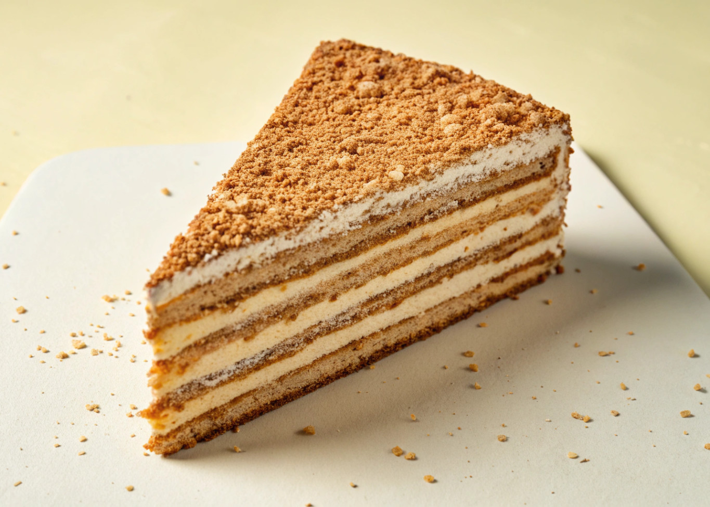

Home
Bolo de Bolacha 3

Bolo de bolacha é uma sobremesa portuguesa feita com biscoitos Marie levemente embebidos em café e cobertos com creme de manteiga.
- Açúcar Branco RAR
- Manteiga amolecida
- Pacote de bolachas Maria
- Bater a manteiga por 5 minutos. Juntar o Açúcar Branco RAR e bater por mais 5 minutos. Por fim junte as gemas e bata novamente por 5 minutos. Reserve.
2
- Junte a colher de Açúcar Branco RAR ao café (opcional). Molhe rapidamente uma bolacha dentro e disponha sobre um prato raso grande. Não molhe muito tempo as bolachas dentro do café, o objetivo não é que fiquem moles mas que tenham o gosto a café.
- Uma por uma, disponha as bolachas no formato que desejar.